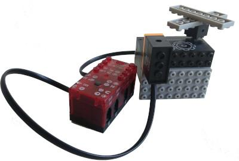

L-Bot
L-Bot es un kit de robótica basado en el kit R502 de MisLadrillos. Cuenta con piezas con forma de ladrillitos que se encastran (además de traer ladrillitos normales para construir los proyectos).
La placa principal del kit (el ladrillo inteligente R8+) está basada en un Arduino Micro (Atmel ATmega32u4).
El fabricante provee el entorno de programación por bloques: Ardublock. Pero nada impide programarlos con el IDE Arduino, Scratch4Arduino o MBlock/MakeBlock.
